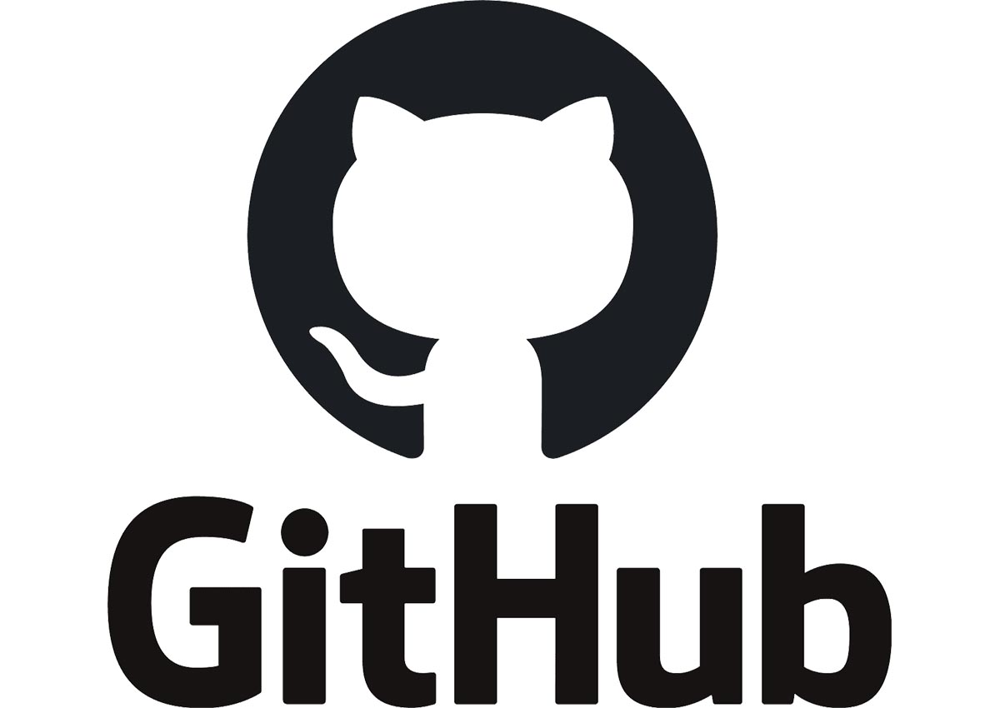

О нас
GitHub — крупнейший веб-сервис для хостинга IT-проектов и их совместной разработки. Веб-сервис основан на системе контроля версий Git и разработан на Ruby on Rails и Erlang компанией GitHub, Inc (ранее Logical Awesome). Сервис бесплатен для проектов с открытым исходным кодом и (с 2019 года) небольших частных проектов, предоставляя им все возможности (включая SSL), а для крупных корпоративных проектов предлагаются различные платные тарифные планы. Слоган сервиса — «Social Coding» — на русский можно перевести как «Пишем код вместе». На футболках же печатают совсем другую фразу: «Fork you!» («Ответвись!»). С одной стороны, она созвучна с англоязычным ругательством и намекает на неформальную атмосферу. С другой, эти слова напоминают, что создавать новые форки с Git можно легко и безболезненно — традиционно, к созданию веток разработчики проектов с открытым исходным кодом относятся негативно — а также созвучна названию одной из возможностей GitHub — очереди форков.
Подробнее
Что вы сможете делать у нас:

Следить за новостями из мира программирования.
Выкладывать свои собственные сайты.
Комментировать работы других разработчиков.